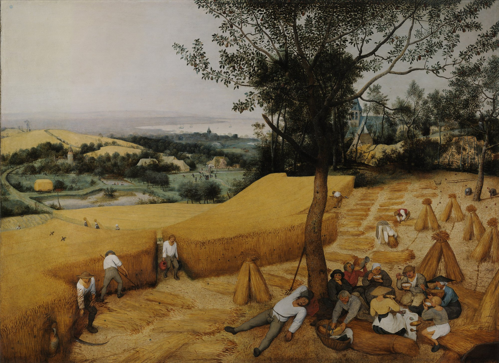
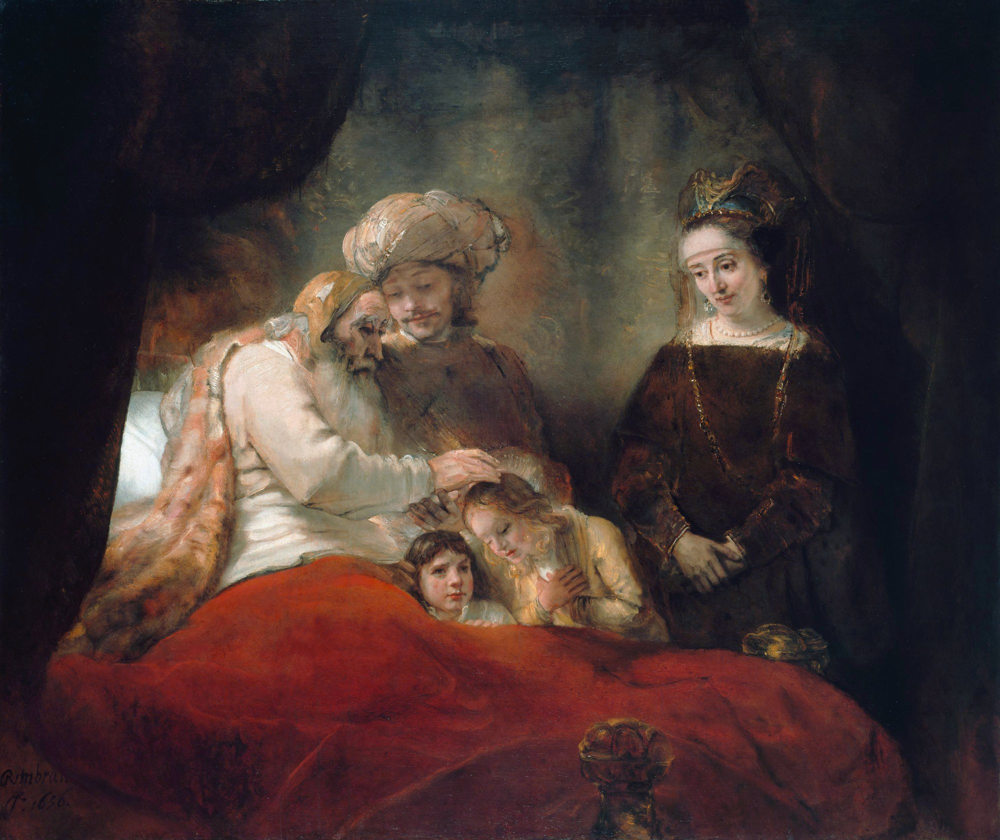
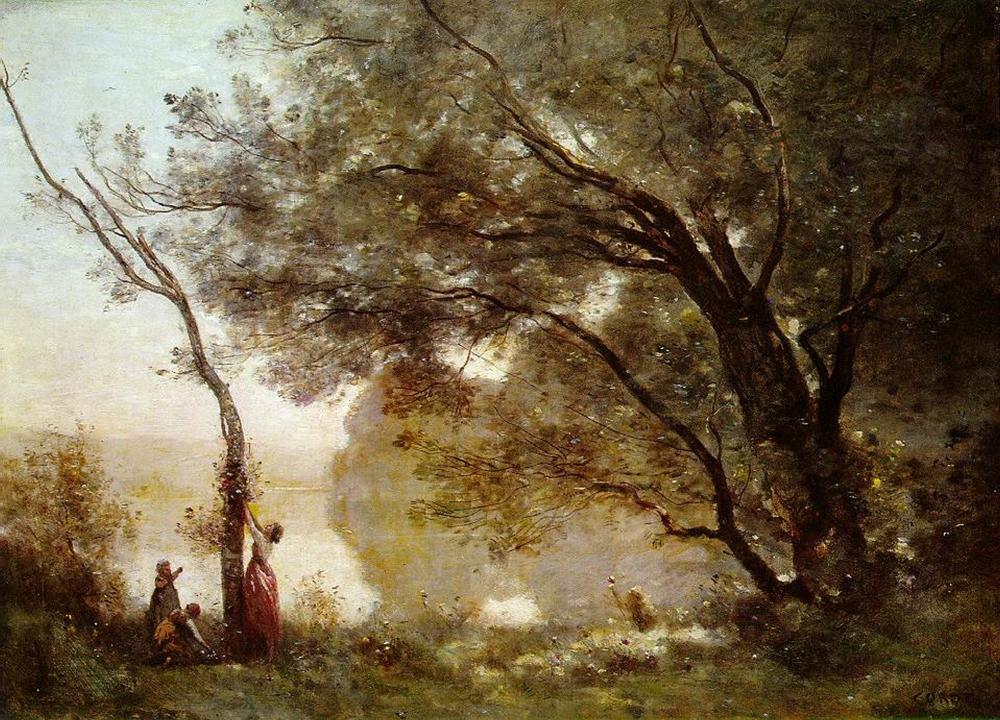

Séance 7 sur 8 · Je trouve le sens
Séance 7. Le patriarche
LIRE LANGUE ORAL Durée : 55 minutes, minutage sur 52. Première technologique, lycée général et technologique. Quand la machine s'arrête.
Question de la séance. Comment le récit transforme-t-il un sauveur en patriarche dont l'autorité ne se discute plus ?
Troisième explication linéaire, puis un débat réglé, puis la pointe de la spirale. Le professeur sélectionne une vingtaine de lignes, dans l'édition de la classe, de « Près de la fontaine » jusqu'aux lois de François, « toute la terre abandonnée ».
Déroulement, minute à minute
| Étape | Durée | Activité |
|---|---|---|
| 1 | 6 min | Lecture expressive de l'extrait. |
| 2 | 20 min | Explication linéaire, en trois mouvements. |
| 3 | 10 min | Question de grammaire : phrase complexe, verbes d'autorité. |
| 4 | 12 min | Débat réglé : « François est-il un sauveur ou un tyran ? » Chaque élève intervient une fois, avec une référence précise. |
| 5 | 4 min | Spirale : la pointe. Trace et travail. |



Explication linéaire 3 : le patriarche
Situer. Des années ont passé. François règne sur une vaste région rurale.
Projet de lecture. Comment le récit transforme-t-il un sauveur en patriarche dont l'autorité ne se discute plus ?
Mouvement 1. Le tableau pastoral
« Près de la fontaine, sous le grand tilleul » : décor de village, présent de narration, images de paix (fontaine, arbre, banc). La scène ressemble à une image d'Épinal.
Mouvement 2. La loi
« Il ordonna », « leur conseilla » : verbes de parole autoritaire. « à tous les hommes, veufs ou célibataires » : la totalité. Le corps des femmes et des hommes est mis au service de la terre.
Mouvement 3. La justification
« Il fallait des bras pour remuer toute la terre abandonnée » : la nécessité (« il fallait ») justifie la loi ; les êtres humains deviennent des « bras » (métonymie). Retour paradoxal à la logique du début : l'homme est encore un moyen.
Conclusion. Le roman célèbre une communauté heureuse, mais le lecteur de Première peut lire, sous le tableau, un ordre où personne ne choisit.
Corrigé de l'explication (éléments attendus)
On attend un projet qui nomme la transformation (sauveur devenu patriarche), pas un résumé de la partie IV. Au mouvement 1, le tableau pastoral doit être lu comme un choix d'écriture (présent, décor, image d'Épinal), pas seulement décrit. Au mouvement 2, les verbes « ordonna » et « conseilla » se placent presque au même rang : l'analyser. Au mouvement 3, la métonymie des « bras » fait écho aux « contenus » de la séance 2 : un élève qui entend cet écho relie les deux bouts du roman, c'est précisément Je trouve le sens.
Question de grammaire
Phrase à analyser (après vérification dans l'édition de la classe) : « Il ordonna à tous les hommes, veufs ou célibataires, de choisir une femme et leur conseilla de faire rapidement des enfants. »
Corrigé de la question de grammaire
Phrase complexe formée de deux propositions coordonnées par « et », de même sujet « Il ». Chaque verbe (« ordonna », « conseilla ») a un complément d'objet second (« à tous les hommes », « leur ») et un complément introduit par « de », sous forme de groupe infinitif (« de choisir une femme », « de faire rapidement des enfants »). « veufs ou célibataires » : adjectifs apposés à « hommes ». Effet : la construction parallèle met sur le même plan l'ordre et le conseil ; la seconde formule, plus douce, n'en reste pas moins impérative.
Débat : « François est-il un sauveur ou un tyran ? »
Règle : chaque élève parle une fois, avec une référence précise (une citation courte, une partie, une scène). On n'interrompt pas. On peut nuancer : les deux mots peuvent être justes, à des moments différents du roman, ou selon le point de vue (celui du narrateur, celui d'un personnage, celui du lecteur). Le professeur écrit au tableau les références qui reviennent.
La pointe de la spirale : Je trouve le sens
Chacun écrit, en une phrase, la question que le roman lui pose, à la pointe. On ne copie pas la phrase du voisin. On s'appuie sur le fil de la dépendance : dépendance à la machine, puis dépendance au chef.
Trace écrite. Le salut par la terre devient un ordre patriarcal. Les hommes, qui étaient des « contenus » dans le train, sont devenus des « bras » pour la terre. On a changé de maître.
Point d'arrêt. Après l'étape 3 (l'explication et la grammaire).
Sortie de secours (8 minutes). Lecture, mouvement 2 seulement (la loi), puis une phrase de débat par élève, avec une référence.
Travail pour la séance suivante. Préparer la présentation de Ravage comme œuvre choisie, en 2 minutes, avec la fiche de la séance 8 : l'œuvre en une phrase ; pourquoi je l'ai choisie ; un passage précis ; la question que le roman me pose (la pointe de ma spirale).
Pour le professeur
Citations à vérifier : C8, ouverture de la partie IV, « Près de la fontaine, sous le grand tilleul, le patriarche et Paul aux cheveux blonds sont assis » (le prénom Paul est aussi celui du héros de Dune : on peut le noter, sans en faire une clé). C9, les lois : « Il ordonna à tous les hommes, veufs ou célibataires, de choisir une femme... Il fallait des bras pour remuer toute la terre abandonnée. » Open Library indique, pour une édition Folio, le début de la partie IV vers la page 291. Vérifier. Sélectionner une vingtaine de lignes.
La pointe. La formulation attendue, que l'on ne donne pas d'avance : peut-on se libérer d'une dépendance sans se soumettre à une autre ? Si un élève l'approche avec ses mots, on la reçoit. Si la classe reste sur « François est un tyran » ou « François est un sauveur », on relance par le fil : machine, puis chef.